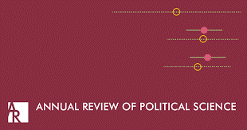
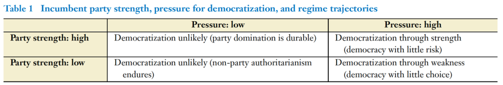

收录于合集

作品简介
【作者】
Rachel Beatty Riedl，康奈尔大学政府系教授，研究兴趣为新民主国家的制度发展，地方治理和权力下放政策，威权政权的遗产以及宗教和政治，研究重点是撒哈拉以南非洲。Dan Slater，密歇根大学政治系教授，研究兴趣为持久的独裁政权和新兴民主国家的政治和历史，其区域重点是东南亚。Joseph Wong，多伦多大学政治系教授。Daniel Ziblatt，哈佛大学政府系教授，研究兴趣为欧洲和民主史。
【编译】 宋翔宇（国政学人编译员，北京大学）
【校审】 兰星辰
【排版】 黄婷婷
【美编】 聂涵琳
【来源】
Riedl, R. B., Slater, D., Wong, J., & Ziblatt, D. (2020). Authoritarian-Led Democratization. Annual Review of Political Science, 23(1), 315-332. doi:10.1146/annurev-polisci-052318-025732.
期刊简介

Annual Review of Political Science《政治学年度评论》是由《年度评论》出版的经同行评议的年度学术期刊，涵盖了政治学领域的重大发展，包括政治理论和哲学，国际关系，政治经济学，政治行为，美国和比较政治学，公共行政学政策和方法论。它成立于1998年，其主编是玛格丽特·列维（Margaret Levi）和南希·罗森布鲁姆（Nancy Rosenblum）。该期刊2019年的影响因子为4.270。
威权政治：
威权主导的民主化
Authoritarian-Led Democratization
Rachel Beatty Riedl
Dan Slater
Joseph Wong
Daniel Ziblatt
内容提要
威权统治在几乎没有选择或没有面临风险的情况下更有可能实现民主化。在某些情况下，民主化对威权统治者的风险很低，以至于结束威权主义可能并不意味着权力的退出。本文 发展了一个统一的、在现任威权统治处于低风险条件下的威权主导的民主转型理论 。在威权主导的民主化进程中，威权统治者的政党实力是最关键的因素。当现任政党的实力强大到现任威权政客对在选举中获胜充满信心时，非民主政体就会进行可逆的民主实验，最终累积为稳定、繁荣的民主政体。欧洲第一波民主化浪潮以及中国台湾和加纳最近的民主转型的证据，表明政党力量是如何在全世界和整个现代史上巩固威权主导的民主化。
文章导读
01
介绍
关于威权政体为什么会变为民主政体，当前有两种截然不同的观点。 占主导地位的 第一种观点认为威权政体在没有选择的时候民主化 。此时政权从内部分裂瓦解(O ‘Donnell et al. 1986)，民众抗议威胁着威权统治者及其核心集团(Geddes 1999, Acemoglu & Robinson 2006)；新兴资产阶级对民主化提出要求(North & Weingast 1989, Ansell & Samuels 2014)；来自超级大国的援助坚持将民主化作为必要条件(Bratton & van de Walle, 1997)。即，当威权政权处于危机，除政治改革别无选择之时，就会进行民主化。Dahl(1971)指出，如果镇压的成本超过容忍的成本，威权政权就会让出权力。 另一种观点认为，威权政权在认为几乎没有风险之时进行民主化。 相对的经济平等、资产流动性及自然资源的丰富意味着民主不会产生巨大的再分配压力(Boix 2003, Dunning 2008)；政权内部清楚对手“不可告人的秘密”(skeletons in the closet)，因此不必担心转型正义而安全下台；威权统治者有一个“可用的过去”(usable past)，这将允许他们在一个竞争性的民主中寻求救赎和革新(Grzymala-Busse 2002)；军事统治者知道自己可以撤回军营，重担责任(Geddes 1999)；威权领导人可以定义自己退出的条件和时机，允许他们在自己的精英主义者的支持下进行“民主博弈”(game democracy) (Albertus &Menaldo 2018)。本文中，现任威权统治者在民主化过程中面临权力退出并移交反对派的风险。本文为上述第二个观点提出了一个统一的理论框架。
本文的理论框架，即威权主导的民主化(authoritarian-led democratization)有以下三个特点。 第一，作者认为，这种民主化发展轨迹最重要的来源是现任政党实力。第二，威权主导的民主化始终是选举威权政体在压力不断上升的情况下通过可逆试验逐渐将自己转变为选举民主制的过程，而非精密的战略设计或绝望的错误估计。第三，领导者对于选举胜利的信心推动了威权主导的民主化，从最初民主让步的开放阶段到最终民主化完成阶段，前执政党“学会了失败”(learn to lose) (Friedman &Wong, 2008)。对于现任威权统治者来说，民主化有时是一种战略选择，而非一种被迫行动。威权主导的民主化是一个可识别、反复出现的路径。本文的实证部分通过欧洲的第一波民主化，中国台湾和加纳的民主化来论证本文的理论框架。
02
威权主导的民主化
与中产阶级的利益或工人阶级对于民主的要求相反，作者认为现任的威权统治者在实施和维持民主方面发挥关键作用。为什么在政治上规避风险(risk- averse)的威权统治者会进行政治改革？威权统治者实施民主化改革的两个关键因素是许可和生产条件。
生产条件(productive condition)是，执政党对要求增加政治权利和不断上升的竞争压力进行风险评估，而这种压力与该党的民众支持、组织力量以及在执政期间管理改革的主导地位有关。也即，政治自由化来自于国内或国际自由化压力的增加，在这种情况下，威权统治者对其赢得竞争性选举并维持自己的能力有高度信心。威权统治者对改革要求作出反应，进而取得利益的有限风险的平衡，刺激了他们期望自身能力在结束威权后能继续存在的民主化。这一逻辑意味着威权统治者实际上可以从领导民主化中获得收益。例如，当他们作为改革自由化的催化剂时，可以增加国内温和派和改革者的支持；可以加强国际支持、发展援助或外国直接投资。许可条件(permissive condition)是先前政党组织和社会控制与支持策略的制度遗产。这些制度上的优势使得威权统治者能够在挑战日益严峻之时保持自己的权力，对其进行充分评估，并将政党实力转化为选举胜利。
上述两个因素要求威权统治者既要领导政治自由化，也要遵守民主转型。威权统治者对民主转型的持久承诺是民主韧性和稳定的基本要素。这一论断的关键在于，威权统治者不只在别无选择的情况下领导民主化，相反，当他们还有能力抵抗政治改革时，他们可能会在战略上领导政治改革。矛盾之处在于，执政党的执政能力使得维持威权统治成为可能，但同时也降低了其必要性。威权统治者接受改革的收益和成本，因为他们认为实施基本的自由化的风险很小，且可能的收益大于潜在的成本。因此本文的观点与前述Dahl(1971)的观点一致。然而，在Dahl的理论中改革的动因通常被视为镇压成本的上升。本文强调，容忍民主反对派的成本之所以对民主化来说足够低，主要原因是存在一个稳固的、对选举有信心的执政党。虽然威权统治者面临的风险程度不同，但相对于采取其他选择的预期成本和收益，威权统治者有足够的实力来管理改革，以维持其权力和特权。本文要证明一个强大的执政党对于威权主导的民主化路径的重要性。
风险因素和责任评估
(Risk Factors and Incumbent Assessment)
政权的风险来源可能包括工人阶级和中产阶级的崛起，或规模缩小但同样强大的中产阶级的崛起。但这并不是刺激国内需求的必要条件，也不一定会促使民主化。例如在撒哈拉以南非洲的大部分地区，民主化的要求是由国际合作伙伴、反对派精英以及在许多情况下由城市居民和专业人士、工会等组成的广泛联盟来反对执政党(Arriola 2013, Bleck & van de Walle 2019)。这些要求可能被视为政权的风险，但也可以被现任政权视为扩大社会基础、巩固合法性、获得更多外部资源用于其国内战略的机会。因此这些明显的风险为统治者带来了获利的机会。为了使需求民主化对统治者可能带来的收益大于成本，执政党必须能够依靠特定的力量来源，如发展和公共物品的遗产、受欢迎的全国基础以及保持一致的现任精英。区别于将政权实力与挑战强度混为一谈的分析，本文将政权的历史优势与特定时刻的挑战区分开来。并且提出，由于执政党的历史优势，挑战实际上可以带来增强合法性、公众支持或内部一致性的机会。此外，威权主导的民主化可能会使先前崛起的反对派更容易分裂。表1总结了威权政党的力量和民主化的压力如何结合起来形成改革前景和轨迹。政党强大而要求变革的压力较弱的地方，作者认为政权保持不变，威权政党的统治能够持续下去。当执政党和自由化的压力都很弱时，民主化也不太可能实现。当一个缺乏强大政党的威权政权面临强大的自由化压力时，它只能从一个弱的位置进行民主化（因此很可能尝试镇压而不是完全民主化）。右上是关注的重点，对一个拥有强大执政党的威权政体，即使压力越来越大，也不会削弱执政党。当强大的威权统治者认为，实行民主是应对不断上升但尚未构成推翻政权的压力的最佳战略反应时，威权主导的民主化最有可能在一个稳定的民主中展开并达到顶峰。

**
**
执政党的力量 (Incumbent Party Strengths)
一个强大的威权政党的力量由五个关键因素综合而成(Ziblatt 2017, p. 49)。第一，执政党有在全国范围内动员支持者的能力。第二，执政党可以激励外部团体但使其服从于执政党（如工会、经济组织、宗教团体、民族协会、公民社会等）。这类似一种嵌入式自治(Evans 1995)，执政党可以向社会群体学习并作出回应，但不受制于他们。执政党可以根据自己的利益采取战略行动，利用下属集团的组织资源来维持自己。第三，执政党可以号召忠诚的专业人士有效地部署竞选资源。在这方面，即使是在有缺陷的威权选举中，选举经验也是执政党的一项资产。第四，执政党有能力动员诸如民族主义，宗教和爱国主义等问题，这些问题可以跨越现有的分歧，并削弱社会阶层或种族作为选举分裂的影响。第五，执政党内有组织边界或“防火墙”，防止极端集团渗透党内决策结构或与党内叛乱者结盟。这些组织力量和国家基础使威权政党能够在不承认失败的情况下承认民主，并同时捍卫自己的利益。威权统治者并不一定希望他们的自由化改革导致完全的民主化，当然也不希望导致自己的选举失败。但在很大程度上，由于威权政党在转型过程中的领导角色及历史优势，它们处于独特的有利地位，有能力成为一个强大的反对派，成为威权的继任政党，通过利用选举渠道在未来获得权力，间接维持民主。输的意愿在很大程度上是以将来能够再次获胜为前提的，通过这种战略展望，民主化得以推行。政党可以避免被淘汰，精英可以避免被“放逐”。
**
**
避免民主倒退
(Avoiding Democratic Backsliding)
这个框架的一个悖论为，在民主化的后期，为什么威权继任政党面临更大的失败风险时，不充当破坏者？这个问题是关键，因为有这样一种逻辑，即当最初的改革为现任政党带来失败的机会时，现任政党通过改革将其收益最大化，并将权力的威胁最小化。执政党为什么不成为民主巩固的潜在威胁？执政党成为民主威胁的原因有三。第一，赢得选举的现任执政党可能会恢复威权手段来巩固权力。第二，前威权政党的持续统治可能会加剧，而非缓解当前的反政府分裂，这种分裂在一开始就动员了反对派。第三，如果要检验民主并将其制度化，现任政党最终将被击败。以前的威权政党如果不愿意接受选举失败，就可能成为民主破坏者。本文提出四种机制，统治者可以通过这些机制避免成为颠覆民主这一“诱饵”的猎物。
第一，在一个新民主政体中，存在着更强的横向问责机制，最重要的是存在一个自治和有能力的司法机构。一般而言，横向问责制会给威权政党带来交叉压力，而腐败调查和其他形式的司法监督的可能性可能会鼓励威权统治者接受民主，将其作为他们个人和组织战略利益的唯一游戏。第二，自由化进程可能刺激或加剧威权政党内部关于自由化和民主实践的内在价值的分歧，使其难以在部署威权蔓延战略上维持共识。第三，民主化改革为地方、区域和国家各级有竞争的职位创造了新的政治格局。威权政党可能会把国家层面的损失看作是暂时的平衡，而在议会和州或地方层面的胜利为政党提供了持续的执政机会(Riedl & Dickovick 2014)。第四，威权统治者可能会在实施民主改革的过程中学会失败。威权统治者可能会认为，短期内退出，将是未来重获国家权力的最佳途径。
03
欧洲历史案例与第一波民主化：两种模式
西欧的第一波民主化 (1830s-1930s)中，塑造民主稳定的一个被低估的集体政治参与者是传统右翼政党，或保守政党，他们代表处于欧洲前民主政治秩序中心的社会和政治团体。虽然这些政党在每个国家代表着欧洲旧政权的不同群体，如国家官员、经济精英和高级教会神职人员，但它们是当代威权继任政党的先驱，往往在民主化压力上升时捍卫君主政体的特权，而通过积极塑造民主，它们能有效地应对民主的崛起。广义上讲，19世纪30年代到20世纪30年代期间，西欧经历了两大民主化进程。Ziblatt(2017,2018)发现，在一组国家中，如瑞典、比利时、英国、丹麦和荷兰，民主以一种固定的方式进行。在第二组国家，如德国、意大利、西班牙、葡萄牙和法国，民主化的方式不那么稳定，经常发生故障，转型停滞不前。为什么在长达一个世纪的民主化进程中，一些国家经历了民主扩张，而另一些国家却经历了宪法瓦解？在第一组国家中，在男性普选权和社会主义政党兴起之前，保守政党就形成了群众党组织的核心属性(Ziblatt 2017)。在这些国家中，代表传统核心群体的右翼政党会深入新选区，找到有效的问题和分歧来赢得支持，而且往往会发起并支持重大的民主转型。这其中最典型的便是瑞典。相比之下，在以19世纪以来的德国以及大部分南欧国家为代表的第二组国家中，民主转型更难实现，即便实现，也很难持久。此外，宗教冲突和进入国家的途径在早期分裂了右翼政党。政治政权不稳定的性质和旧政权政党的分裂是密不可分的：实力较弱的右翼政党更抗拒民主改革，而一旦改革成功，他们就更可能颠覆改革。可以肯定的是，这些国家对民主改革的强烈抵制来自于弱小的政党，如在德国、西班牙和葡萄牙，他们的生存和他们所代表的团体利益被认为受到了哪怕是适度的民主改革的深刻威胁。例如，一个弱小的普鲁士保守党拒绝支持哪怕是最轻微的选举权规则改革，因为这可能会在20世纪头十年将温和的平均主义引入普鲁士政治体系。
04
威权主导的民主化的力量与成功：中国台湾与加纳
中国台湾
1986年秋天，台湾的民主运动“党外运动”宣布成立反对党，即民进党。在戒严令下，这是非法的。大多数台湾事务观察人士预测，执政的国民党会镇压和粉碎反对派。然而，蒋经国却允许民进党成立。一年后，国民党政权解除了戒严令，为两党竞争和台湾最终的民主化铺平了道路(Cheng 1989)。1989年举行了增补选举(supplementary elections)，第一次允许反对党候选人竞争立法机构的席位。1992年，立法院进行了全面选举。1996年第一次选举，国民党候选人李登辉轻松获胜。事实上，在台湾进行民主转型后，国民党继续在政治上占据主导地位。国民党进行民主改革的决定是威权主导的民主化的经典案例。当民进党成立时，国民党依然是受欢迎和强大的，没有面临大规模抗议。国民党的让步代表了其政治策略的突然转变(Dickson 1997)。然而此时国民党仍控制着政治，但其对权力的掌控在20世纪80年代末却缓慢地放松了。在七八十年代的有限选举中，允许独立的非国民党候选人参选；到1986年民进党成立时，国民党的支持率已经开始下降。党外运动掀起了一场声势越来越大的反对运动，特别是利用了台湾反威权政权的分裂和酝酿已久的民族分裂，动员台湾人反对“外来者”和“外省人”(Chinese mainlander)的国民党(Wachman 1994)。与此同时，中美关系正常化，国民党开始失去美国的支持，国际承认的失去也破坏了其在台湾存在的理由。
1986年蒋经国允许成立民进党，推行政党竞争，是执政党维持民主权力的一种先发制人的策略，符合本文威权主导的民主化理论。现任威权统治者承认民主并不一定是承认失败，尤其是在现任政党仍然强大的情况下。国民党有很多优势力量，部分源于其在台湾的历史。1947年蒋介石到台湾后着手整党，铲除了党内精英中的对手，铲除了腐败，并打破了与中国大陆之间残存的裙带关系。1950年的政党重组运动以大规模的党员运动为特色，形成了列宁主义风格的党组织，并渗透到每个政府机构和当地社区，建立了一个紧密的地方关系网，这不仅让执政党得以密切监视，也为其提供了一个重要的反馈机制，以衡量其受欢迎程度。虽然在20世纪60年代实施了有限的地方选举，但国民党对政治权力的控制是不容置疑的，部分原因是其巨大的组织力量(Dickson 1996; Rigger 1999)。战后的经济奇迹为国民党获得了合法性。在美国的支持下进行土地改革，既铲除了日本殖民时期的封建残余，又释放了新的经济生产力。在此基础上，国民党实施公共政策，配置政府资源，促进台湾进入全球市场，并不断提升台湾的工业产出。同时还确保经济增长的分配结果是公平的。发展型政府发展台湾中小企业的努力，加上在普及教育、充分就业和有针对性的社会计划方面的大规模投资，促进了社会流动性和中产阶级的增长。
在威权统治期间，国民党不断调整。当台湾族裔身份成为一个重要的政治分歧时，国民党的回应是招募台湾人加入成为普通党员和领导层。国民党政权的“台湾化”也延伸到了政府官僚机构。尽管反对党认为国民党是一个流亡的大陆政权，但国民党始终赢得了绝大多数人的支持，这一事实表明，国民党相当成功地将自己重新定位为一个本地政党。国民党继承的力量，即其组织结构、经济发展方面的“可用的过去”(Grzymala- Busse 2002)、以及战略适应，特别是本土化方面的努力，为其政权在1980年代末启动民主改革时带来了相当大的胜利信心。国民党承认民主却无意让出权力。其自信来源于几个方面。从绝对意义上说，国民党继承的优势力量赋予了它巨大的权力和重要的政治经济资产，远强于刚刚起步的民进党。此外，民进党主要是一个反威权的政党，因此依靠反政权分裂来动员其支持者；国民党通过推行民主改革有效地消除了这种分裂(Rigger 2001, fall 2005)。国民党先发制人地承认了民主改革，并有效地领导了民主进程，这让它得以以有利于自身的方式塑造台湾的新民主。虽然国民党明白民主改革的风险，但它仍有信心，不仅能在政治上挺过民主转型，而且很可能在民主中蓬勃发展。国民党拒绝成为民主破坏者，因为尽管它输掉了一些选举，但它仍有能力竞争(Slater & Wong 2018)。国民党在相对较短的时间内，将自己改造成一个合法的民主改革者和一个投入民主游戏的政党。
**
**
加纳
1992年，加纳的威权执政党全国民主大会党(National Democratic Congress)成功地领导了向多党竞争的过渡。其长期成功的主要原因是得到了当地券商的稳定支持。考虑到酋长在加纳的持续重要性，NDC在早期阶段将当地精英纳入政党，并动员他们的追随者成为政党的支持者。NDC建立了广泛的支持基础，即使在引入多党竞争之后，这种支持依然存在。强大的社会联系是动员对NDC支持的关键，因为该党寻求与基层结合，以提供社会基础作为其统治的基础。NDC进一步进行权力下放，扩大忠诚的政党专业人员队伍，这有利于现任总统成功地实施民主改革，同时尽量减少选举失败的可能性。加纳的威权执政党利用其对国家机器的控制和根深蒂固的社会支持来决定民主改革的程度，并限制政治自由化对其统治的威胁，在民主化中最大化其收益。
NDC成功地完成了从一党统治到多党制的过渡，在1992-2000年的统治时期通过多党竞争进行了自我转变并继续执政。在此期间，NDC通过有针对性的公共服务项目(Briggs 2012)和旨在将地方经纪人纳入国家行政机构的地方治理改革，进一步巩固了自己在地方一级的地位。那么为什么拥有精确战略考量的NDC会接受2000年的选举失败呢？一方面，与早期的威权体制相比，NDC在2000年的损失要小得多。地方经济人依然忠于NDC，在他们的追随者眼中维持着党的形象，同时NDC仍保留近一半议会席位的控制权。因此，NDC并没有失去与国家的联系，也没有在未来的立法辩论中失去所有的发言权。而且，通过行政管理和选举职位继续获得国家资源，使该党得以在很大程度上，即使是在反对派中，与忠诚分子保持庇护关系。
NDC接受了失败，同时处理了内部关于民主改革的性质和程度以及该党自身未来的分歧。NDC的失败和接受失败与党内继承和组织变革有关。两派对NDC未来走向的分歧体现在对民主选举竞争提供何种机会的不同看法上。许多改革派看到了通过忠实遵守游戏规则来竞争和赢得未来的机会。NDC仍然与军方保持联系，这进一步保证了他们暂时失去权力并在未来再次竞争的安全。这些因素使NDC确信，作为一个威权的继任政党，它不会损失太多，而且将来会再次获胜。
05
结论
本文建立了 以一种威权主导的民主化的统一理论 。强大的威权政党可能会在选举中输给民粹主义反对党，但鉴于其威权出身，并不太可能实施民主倒退。因为他们认为如果在短期内失败并不会损失太多，而有限的损失可能最好地保持他们重新掌权的能力，并确保他们的政治和物质利益。横向问责制可能会对现任威权统治者和新获胜的政党产生同样的约束。强大的反对派运动也可能成为可信的制约因素。并且威权统治者可能学会民主政治的技巧，拥有动机让出权力、接受失败。同时，这一理论也提供了三个新应用。第一，威权主导的民主化理论为军事下台提供了一种新的思路。第二，威权主导的民主化为第二波民主化提供了新的视角。第三，威权主导的民主化为民主化模式提供了一个新的视角。
译者评述
本文中作者发展了威权主导的民主化的理论框架，认为一个强大的执政党对威权主导的民主化具有重要作用。在低风险条件下，威权执政党不会抵制民主化，而是将民主化作为一种“策略”，进行民主博弈，并对自己有充分的信心获得选举胜利。影响因素中，政党力量是最关键的，“可用的过去”(usable past)也成为在民主化过程中确保收益大于成本的重要条件。
作者在文中多次提到威权政党的力量来源之一是“可用的过去”。但是，尽管威权继任政党(authoritarian successor party)能够从旧政权的政治遗产中获益，使他们在民主下获得成功，这些遗产对他们来说并不完全是好的。本文作者只谈及威权政党利用“可用的过去”来继续获得合法性和支持，并未具体论述威权政党面对除“可用的过去”外其余政治遗产所持的态度。文中所列的台湾和加纳的例子均拥有相对良好的“过去”，且政党力量相对强大。然而，很多威权政党并不具有良好的“过去”，也没有相对较强的政党力量。因此大多数选民并不赞成该威权政党的起源，也不会投票给他。如果威权政党留给其继任者的宝贵资源被称为威权遗产，那么相反的资源则是威权包袱(authoritarian baggage)(Loxton 2015)。例如，对于所有威权政权来说，对于人权的侵害都是一个威权包袱，同样，经济和国家安全领域失败的政绩也是如此。为了在民主化过程中获得的收益大于成本，威权统治者必须最大化威权遗产的收益，最小化威权包袱的成本。Loxton(2016)提出，面对“过去”，威权统治者会采取四种策略。
第一个策略是“悔悟”(contrition)。Grzymala- Busse(2002)将这一策略描述为“象征性地与过去决裂”。例如，东欧的前共产主义政党既受制于过去，又从中获利。一方面，他们中有些人在共产主义时期因行政能力和实用主义而赢得声誉，这构成了一个“可用的过去”。另一方面，他们又与“本国公民普遍鄙视的政权”保有联系，这是一个“不可用的过去”。为了最小化“不可用的过去”所带来的损害，他们进行了一系列公开的“悔悟”，例如更改政党名称、程序、符号等，并且谴责旧政权的过去的罪行。进行“悔悟”的国家如波兰和匈牙利，威权政党得以重塑自己并迅速恢复权力，而并未进行“悔悟”的国家如捷克共和国，威权政党在民主早期表现不佳。
第二个策略是“模糊处理”(obfuscation)。在这种策略中，威权政党试图淡化过去，而不是承认和表达对过去的悔悟。例如，巴西的自由阵线党(Liberal Front Party, PFL)成立于1985年，是从军政府的官方政党PDS中分离出来的一个派系。在民主制度下，PFL成为了前威权统治者的“真正继承者”。然而，由于PFL在最后几个月与政权决裂，它得以淡化自己作为威权继任者的地位。2007年，PFL改名为“民主党”，这明显是对过去进行“模糊处理”。
第三个策略是“寻找替罪羊”(scapegoating)。这一策略区分“好”的威权统治者和“坏”的威权统治者，并拥护前者谴责后者。尽管威权政党承认旧政权令人厌恶的方面，但它把这些全部归咎于坏的威权统治者。
最后一个策略是“接受过去”(embrace the past)。在这种策略中，威权继任政党没有表达悔悟、模糊处理其起源或寻找替罪羊，而是简单地承认并庆祝它的过去。威权继任政党自豪地宣告了旧政权的成就，并强调了其领导人当权时所谓的田园诗般的国家与当前运转不良的国家之间的对比。
同时，虽然面对不同的威权包袱，不同的威权继任政党选择了不同的策略，但也存在混合策略的可能。威权政党通过这些策略利用过去，以求在民主之下确保收益大于成本。
参考文献
【1】Huntington SP. 1991. The Third Wave: Democratization in the Late Twentieth Century. Norman: Univ. Okla. Press
【2】James Loxton. 2016. Authoritarian Successor Parties Worldwide: A Framework for Analysis. working paper #411. https://kellogg.nd.edu/documents/8706
文章观点不代表本平台观点，本平台评译分享的文章均出于专业学习之用, 不以任何盈利为目的，内容主要呈现对原文的介绍，原文内容请通过各高校购买的数据库自行下载
**
**
**
**
**
**
添加 “国小政”微信
获取最新资讯


国政学人
支持学术公益与知识传播
微信扫一扫赞赏作者 __赞赏
已喜欢，对作者说句悄悄话
取消 __
发送给作者
发送
最多40字，当前共字
上一页 1/3 下一页
长按二维码向我转账
支持学术公益与知识传播
受苹果公司新规定影响，微信 iOS 版的赞赏功能被关闭，可通过二维码转账支持公众号。